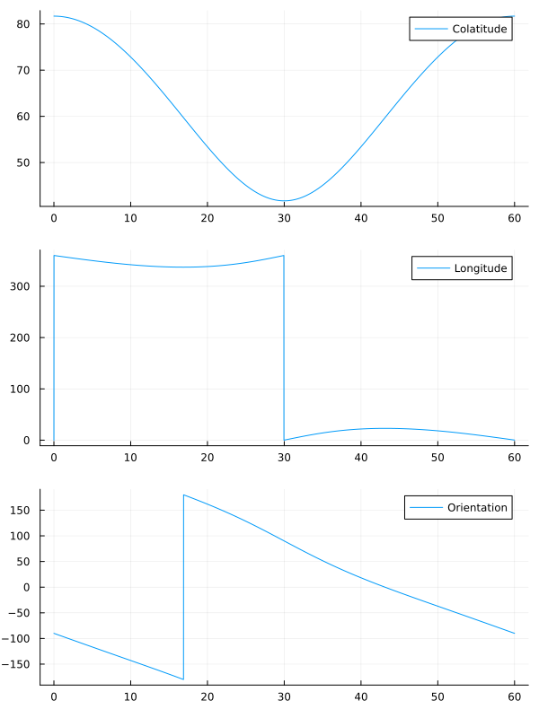

Tutorial
In this tutorial, we present the basic facilities provided by the Stripeline framework.
How the Strip telescope operates
Stripeline provides the tools necessary to simulate the behavior of the Strip instrument as if it were operated at the site in Tenerife (Spain). The instrument is an array of microwave detectors observing the sky in two frequency bands: 43 GHz (Q-band) and 90 GHz (W-band). The telescope does not stand still, but it performs a continuous rotation around its azimuthal axis, as it is shown in the following video:
To simulate the observation of the sky, Stripeline computes the projected direction of the main axis of the telescope (the red beam in the video above) after it has been tilted (first part of the video) and rotated far from the vertical axis (zenith), in the last part of the video. Stripeline considers also the rotation of the Earth, which causes the celestial sphere to rotate as time passes.
To compute the position of the telescope axis in the sky, we can use the genpointings function. This function takes the time of observation and produces a set of «pointings», i.e., a set of angles that specify the direction and orientation of the telescope axis in the sky. If you watch the video above once again, you will realize that the direction in the sky depends on several quantities:
- How much the telescope is tilted with respect to the vertical axis (zenith)
- How much the telescope has rotated with respect to the ground (azimuth)
- What is the position of the Earth.
Pointing generation
Nominally, the azimuth motor makes the Strip telescope rotate once every minute. Stripeline provides an handy function, [timetorotang] that computes the angle (in radians) of the azimuth axis, given the time in seconds and the rotation speed (in Rotations Per Minute, i.e., RPM):
using Stripeline
# What's the azimuth angle after 5 seconds,
# if the telescope spins once every minute?
timetorotang(5.0, 1) |> rad2deg29.999999999999996
An important feature of Stripeline is that all angles are expressed in radians, unless otherwise noted. This permits to use these angles in trigonometric functions like sin and cos without the need to convert them. In the example above, we used Julia's standard function rad2deg to convert the value to degrees.
The detectors used by Strip operate continuously, taking 100 measurements each second, so if we run a simulation lasting one minute (from 0 to 60 s), we will collect 6,001 samples:
time_samples = 0.0:0.01:60.0
dirs, psi = genpointings([0, 0, 1], time_samples) do time_s
return (0.0, deg2rad(20.0), timetorotang(time_s, 1))
end
(size(dirs), size(psi))((6001, 2), (6001,))
The variable time_samples is a range, containing the values 0, 0.01, 0.02, 0.03, …, 59.99, 60.0 in compact form. The call to genpointings uses the do syntax to specify an anonymous function that takes the time time_s as input and returns a tuple of three values: the boresight angle (0.0), the angular distance from the zenith (20°), and the azimuthal angle of the ground motor. (Note that in Julia you can avoid the return in the last statement of a function; we have explicitly written it in this example for the sake of clarity.)
We can plot the colatitude, the longitude, and the orientation as a function of time using the plot function from the Plots.jl package:
using Plots
plot(
plot(time_samples, rad2deg.(dirs[:, 1]), label = "Colatitude"),
plot(time_samples, rad2deg.(dirs[:, 2]), label = "Longitude"),
plot(time_samples, rad2deg.(psi), label = "Orientation"),
layout = (3, 1), size = (600, 800),
)
If you inspect these plots, you will see the behavior of the video at the top of this page:
- The colatitude fluctuates around the mean value 28°, which is Tenerife's latitude. The amplitude of the fluctuation is 20°, which is the angle between the Zenith and the red beam pointing towards the sky.
- The longitude oscillates around the value 0°, and its amplitude is 20° again;